| 日付 | 2013年4月27日（土） - 2013年4月29日（月） | ||||||
|---|---|---|---|---|---|---|---|
| 山域 | 阿武隈周辺 | ||||||
| メンバー | 家族（長女・2歳） | ||||||
| 山行形態 | 子連れ2泊3日ホテル泊 | ||||||
| アクセス | 車 | ||||||
| ルート (Map3) |
|
3日目
本日は最終日。できるだけ早くホテルを出たかったが朝食は7時から。
もう少し朝食の時間が早いと助かるのだが…
竪破山の登山口に向けて車を走らせていると、途中で道が通行止めになっている。
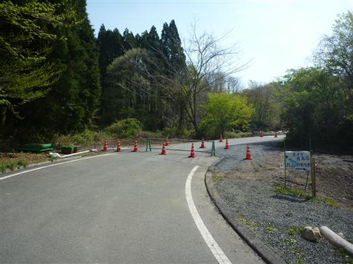
仕方がないので側の空き地に車を停める。標高360m。
道の通行止め情報は事前に仕入れてはいたのだが、もう解除されているかもという
ほのかな期待が裏切られたのと、思った以上に手前で停めさせられたことにがっかりする。
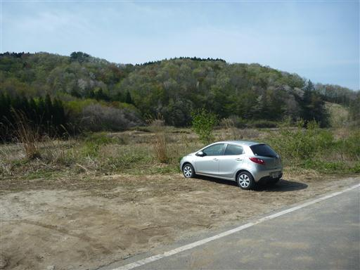
辺りに人影はない。比較的新しそうなきれいな車道を歩いていく。
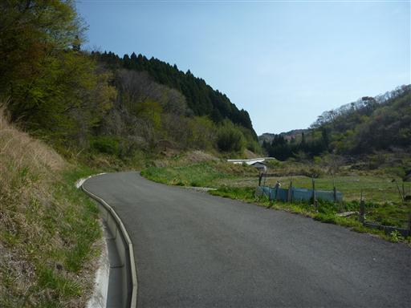
1kmほど歩いて工事現場に到着。本日の工事はお休みのようだ。
どう見ても車は通行可能で、どうしてGWのときくらい通行を許可しないのか、
どうしてあんな手前にゲートを設置したのか、何ともやるせない気持ちになる。
近くの案内板によると工事は5月31日までのようだ。
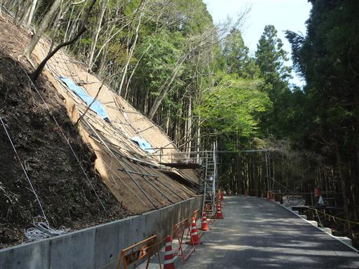
立派な車道と別れて竪破山に続く悪路に入っていく。登山口まであと500mだ。
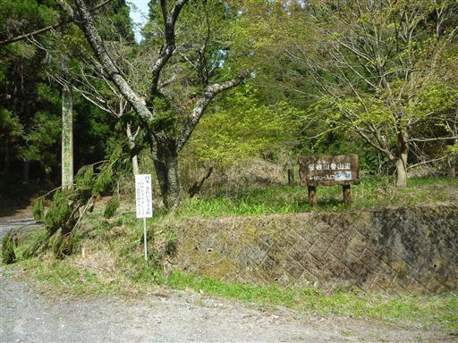
ようやく竪破山登山口に到着する。ここには比較的大きな駐車場がある。
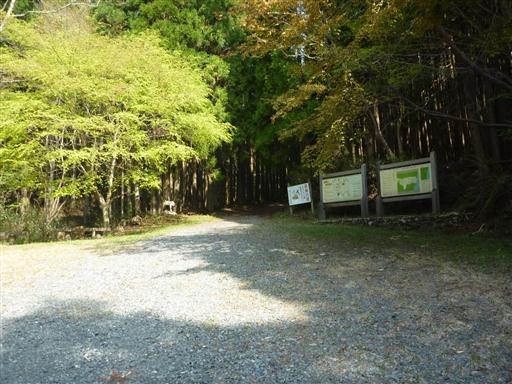
登山道入口にある後生車。願い事をするときに回すらしい。
チベット仏教のマニ車みたいなものなのだろうか？
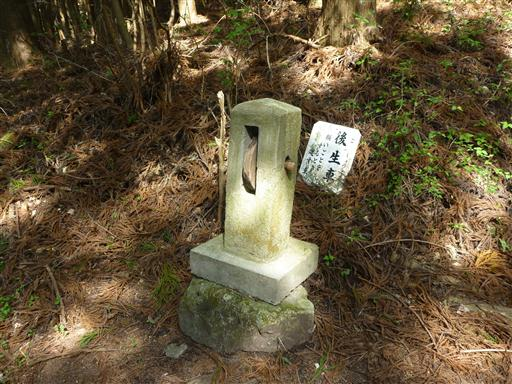
この山は一面植林に覆われている。
歩いていてさほど楽しい登山道ではないが、
この山を有名にしているのは多くの奇岩怪石だ。
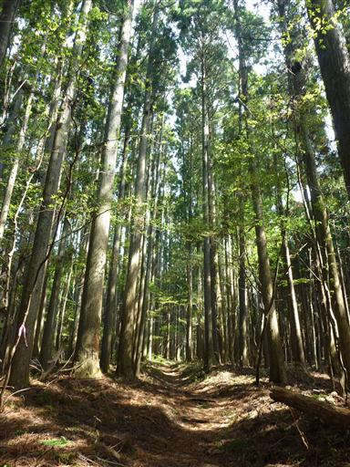
不動石。横幅8mの大きな石だ。不思議なことに石の上を水が流れている。
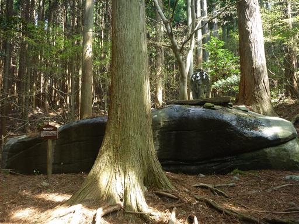
石の上を見てみると、人工的に水が流れるように仕掛けが施されている。
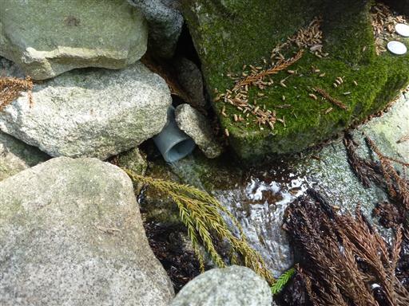
烏帽子石。八幡太郎義家がかぶっていた烏帽子に似ていることから名づけられた。
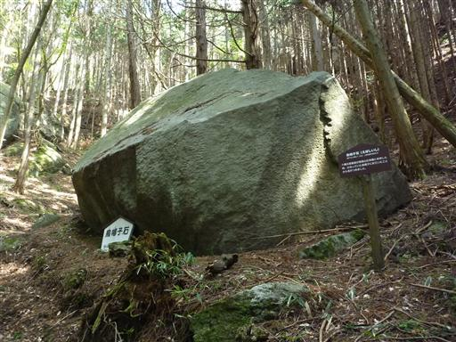
手形石。確かに手形のように見えるが、自然の石なのだろうか？
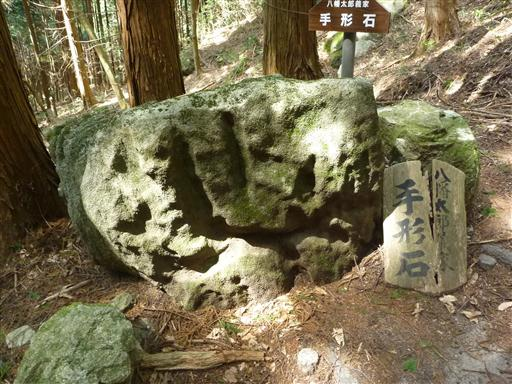
畳石。畳を積み重ねたように見える。かなり大きな石だ。
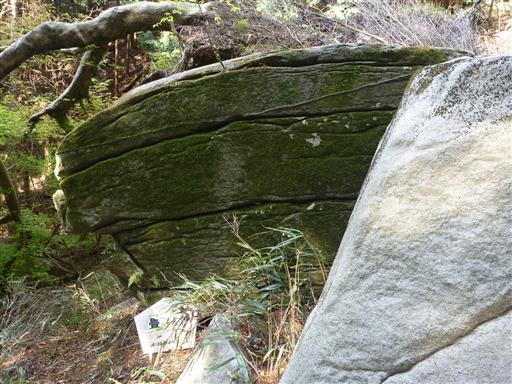
水を筒の中に流している。先ほどの不動石に続いているのだろうか？
筒の中は苔でビッシリだ。
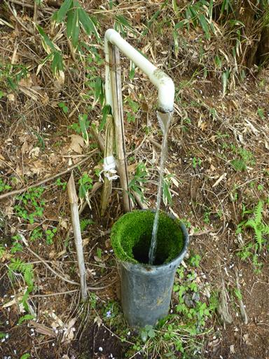
炭やき釜。壊れかけた解説板には「大変珍しいもの」と記載されている。
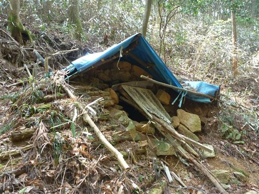
弁天池。側に東屋が建っているが、陰気な場所であまり休憩しようという気は起きない。
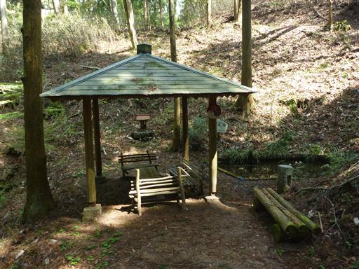
目の前に鳥居と仁王門が見えてくる。
内部に仁王様の姿はなく、左大臣と右大臣の木像が安置されている。
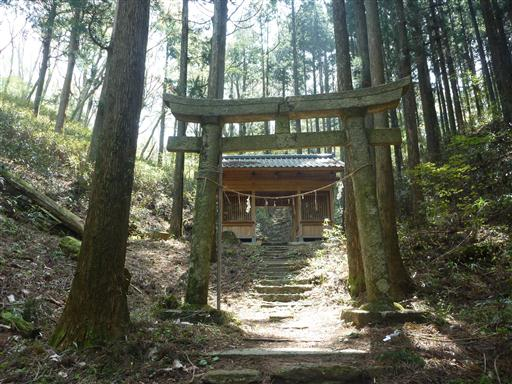
門を潜って先に進むと開けた場所に出てくる。
まず目を引くのが丸い形をした甲石。正面に石をくりぬいた祠がある。
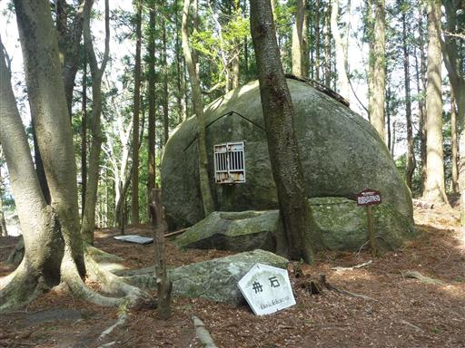
側の解説板には、かつて12体の像が祀られていて、現在は6体が祀られていると記載されているが、
中を覗いてみても像は一体も見つからなかった。
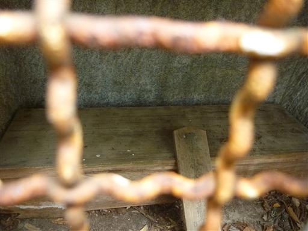
甲石の上部には木が生えている。根は石の割れ目に沿って伸びている。
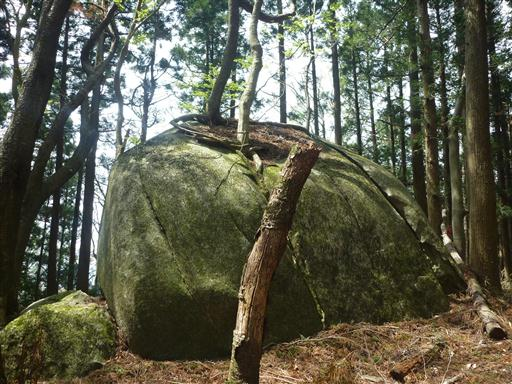
舟石。船の形をした変わった石だ。甲石から剥がれ落ちたものだろうか？
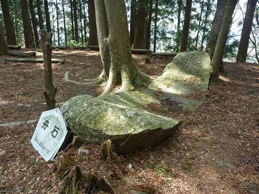
広場の一角に釈迦堂が建っている。
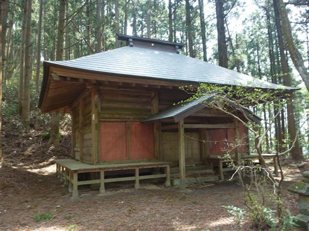
広場の先は古びた階段が続いている。登るのは良いが下りは少々怖い。
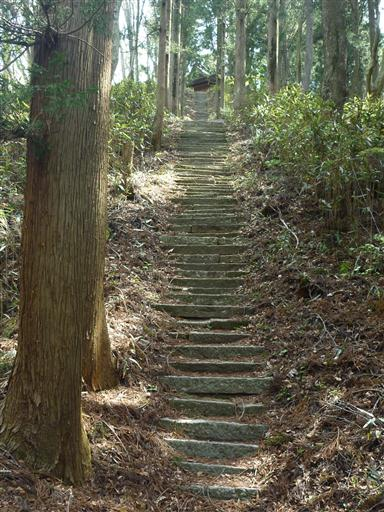
山頂直下に建つ黒前神社。狭い広場いっぱいに建っている。
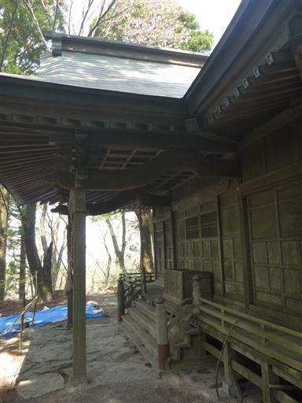
黒前神社を過ぎるとようやく辺りは自然林になる。
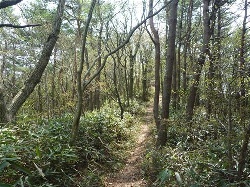
歩くことしばしで竪破山の山頂に到着する。標高658m。
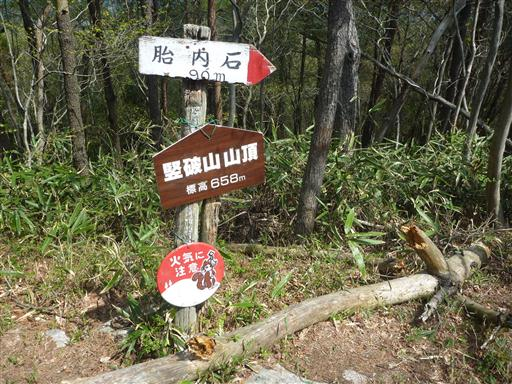
比較的こじんまりとした山頂で周りは樹林に囲まれている。

展望のない山頂だが、展望台に登ることができる。
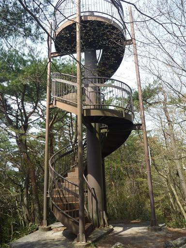
この展望台はかなり古そうだが底が抜けたりはしないのだろうか？
こういったものがメンテナンスされているのかどうか疑問だ。
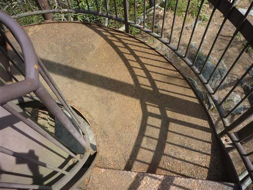
展望台からは素晴らしい眺めを得ることができる。
阿武隈山地の低い山々が連なっている。
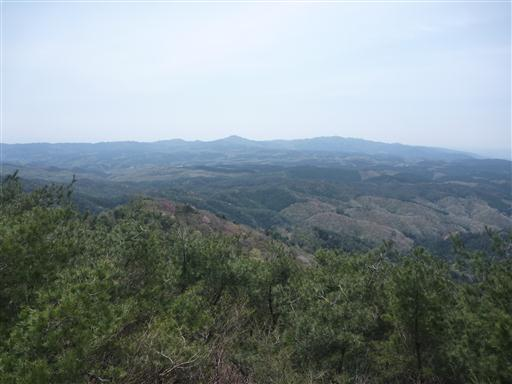
こちらの方角は展望台に登っているのに木が邪魔して景色が見えない。
どうせならもう少し高い展望台を建てればよかったのだが…
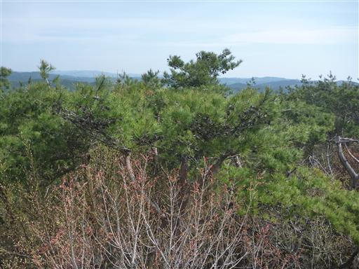
山頂の先にあるという胎内石まで行ってみることにする。
登山道の脇に一際目を引く大きな杉が立っている。
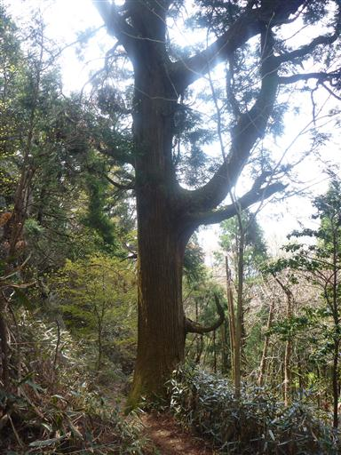
杉の根元には大きなうろができている。
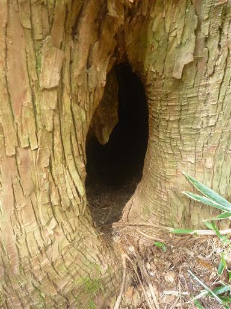
胎内石に到着。大きな穴が開いているが深い穴ではない。
岩でできた庇という感じだ。
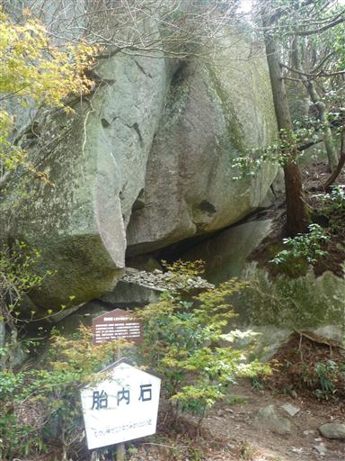
突き出た石の上に小さな石がたくさん積まれている。
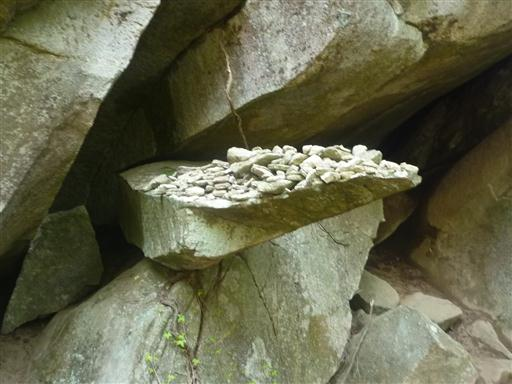
山頂に戻って一服したら下山を開始する。
まず向かうのはこの山のハイライト・太刀割石だ。

太刀割石に到着。7mの大きな石が真っ二つに割れている。
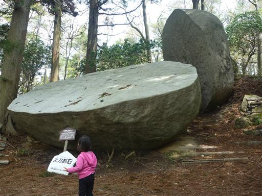
転がった石はぐるりと一周できるようになっている。
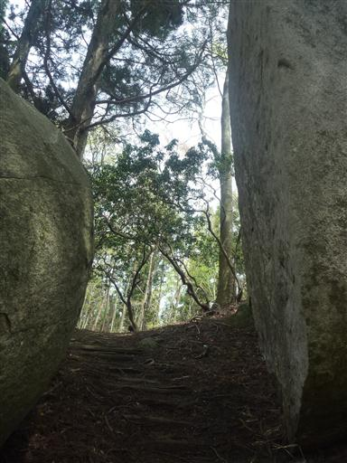
正面から太刀割石を眺める。まるですべり台のように表面は平らだ。
竪破山を有名にしているのはこの石で、ほとんどの人はこれを目当てにこの山にやってくる。
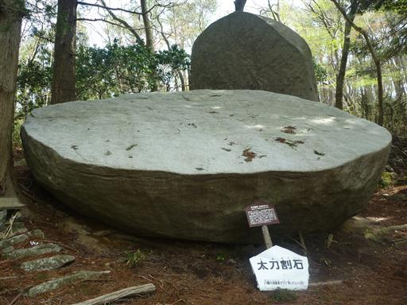
太刀割石から直接下山するか、奈々久良の滝を経由するか迷う。
時刻は10時過ぎで昼食は下山後の予定だ。下山は少々遅くなるが、
この山に来ることはもう無いかもしれないため、未練を残さぬよう滝経由の道を選択する。
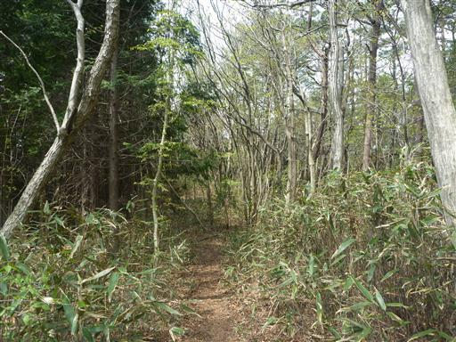
こちらのルートにはさらに2つ、名のある石がある。
まずは軍配石。確かに軍配と言えば似ているが、わざわざ名前を付けるほどの石でもないような…
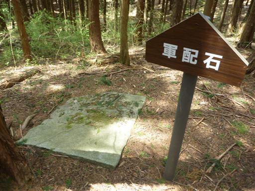
神楽石。ここで神楽を奏したことから名づけられた。
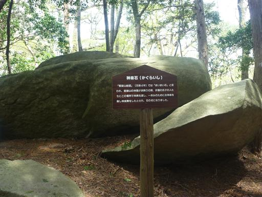
正面からだと特徴のない大きな石にしか見えないが、
側面から見ると石が何枚かに割れていることが分かる。
太刀割石と同様にこの石も昔に割れてしまったようだ。
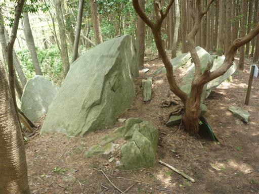
峠に到着。左に行けば下山道、右に300m行けば奈々久良の滝だ。
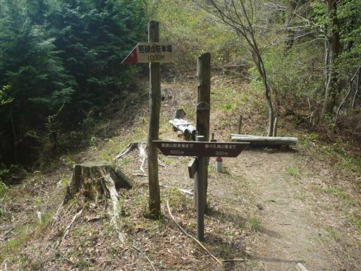
ここまで来れば当然、奈々久良の滝を見に行く。
滝自体は全く迫力があるものではないが、桜の花が良いアクセントになっている。
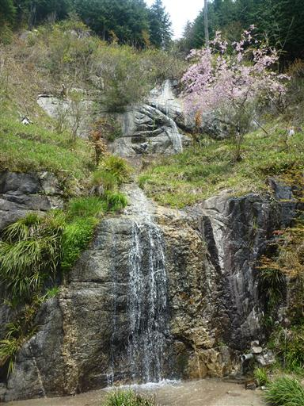
近くに林道が走っている。歩いている人がいることから、ここまで車で来れそうな感じだ。
正規登山道に続く道が工事中なので、こちらに車を停めればよかった。
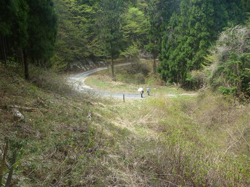
峠に戻って登山口を目指す。下山道はじきに林道になる。
あとは長い長い車道を駐車場まで歩くのみだ。
最初は誰とも出会わないだろうと思っていたこの山だが、案外登山者とすれ違う。
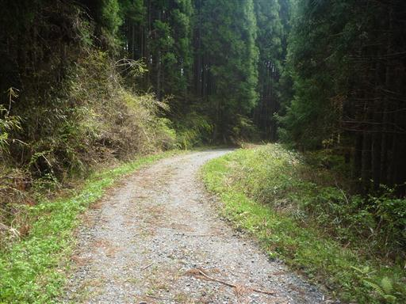
車を停めた場所まで戻ってくる。
丸山のわき水という案内が出ていたので飲んでみることにする。
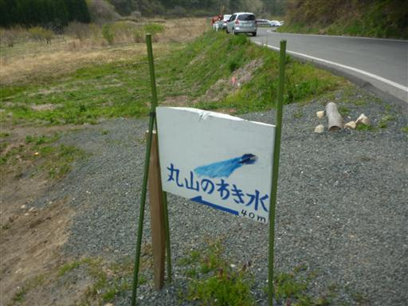
水は勢いよく出ている。疲れた後の水はやはりおいしい。
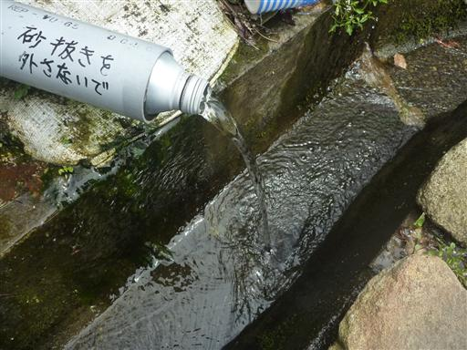
朝は自分の車1台がポツリと停まっていただけなのに、下山してみたら多くの車が停まっている。
車道は通行止なのに、皆文句も言わず（？）、長い車道を歩いているようだ。
これで今回の山旅はおしまい。GW前半の最終日のため、高速道路が混まないうちに
できるだけ早く帰ることにする。
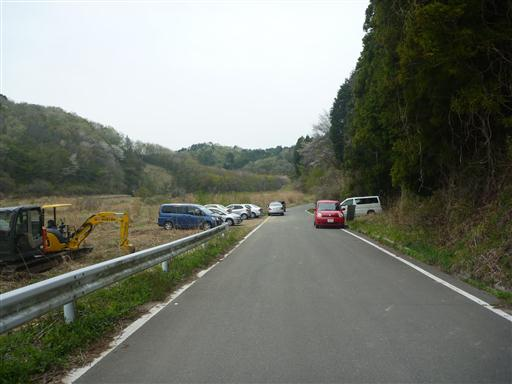
竪破山から高速道路ICまで飲食店は一軒もなし。
SAでの昼食は味気ないので、日立の街まで出て珉珉という中華料理屋に立ち寄る。
凄まじい量の焼きそばが出てきたが何とか完食。店のおばちゃんにはずいぶん親切にしてもらった。
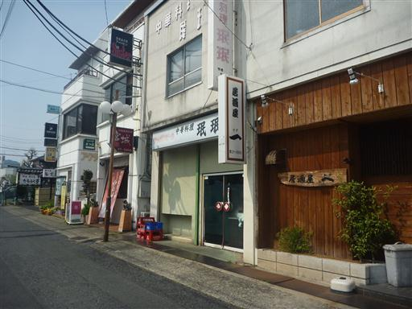
帰りの高速道路は箱崎JCTで30分ほど渋滞しただけで、比較的スムーズに帰ることができた。
今回は、移動、食事、ホテルなど全てが大変だったが、
当初計画していた行程は全てこなすことができ、やればできるということが分かった旅だった。
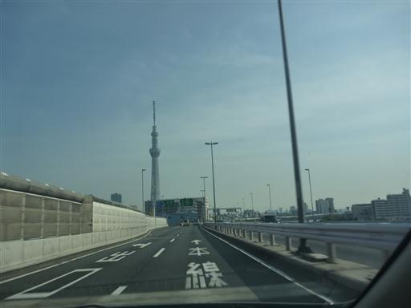